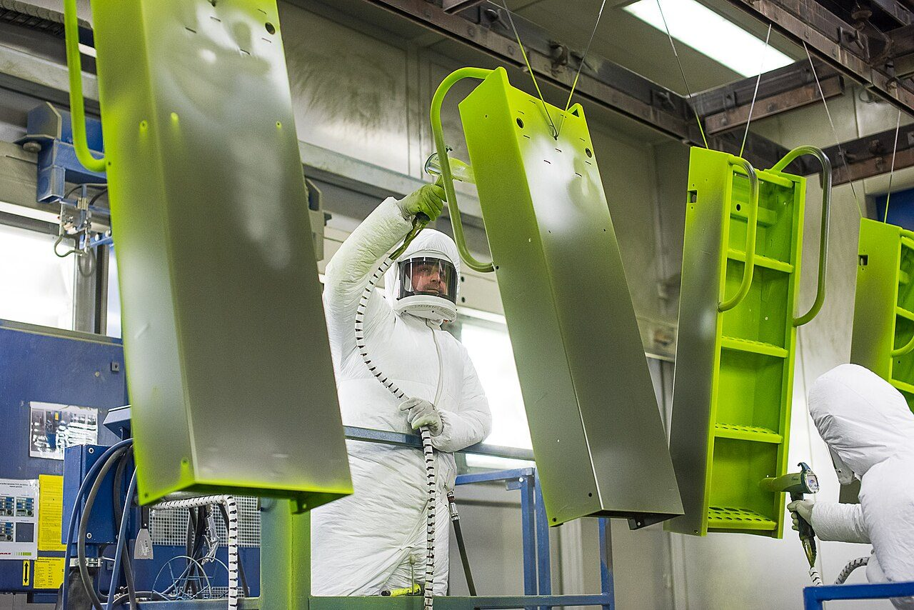

رنگ کورهای و پودری الکترواستاتیک
پوشش بادوام برای قطعات تیراژی
رنگ کورهای پودری، صدفی، چکشی و بافتدار، براق و مات، روی قطعات فلزی تیراژی؛ پوششی سخت، یکنواخت و بادوام برای بدنهی دستگاه، سازه، قطعات صنعتی و محصولات مصرفی.
- انواع: پودری، صدفی، چکشی، بافتدار، براق و مات
- روی: فولاد، آهن، آلومینیوم و فلزات دیگر
- مخصوص: سفارشهای تیراژی


رنگ کورهای (رنگ پودری الکترواستاتیک) پودری است که با بار الکتریکی روی قطعهی فلزی مینشیند و در کوره پخته میشود تا لایهای سخت، یکنواخت و بادوامتر از رنگ مایع بسازد. هایپرفب در تهران رنگ کورهای پودری، صدفی، چکشی و بافتدار، براق و مات را روی قطعات فلزی تیراژی از فولاد، آهن، آلومینیوم و فلزات دیگر انجام میدهد. قیمت بر اساس ابعاد و سطح قطعه، نوع رنگ و بافت، آمادهسازی لازم و تیراژ اعلام میشود؛ مشاوره: ۰۹۹۶۲۲۳۳۸۹۸.
- خدمت
- رنگ کورهای پودری الکترواستاتیک روی فولاد، آهن، آلومینیوم و فلزات دیگر
- انواع
- پودری، صدفی، چکشی، بافتدار؛ براق، نیمبراق و مات؛ کدهای RAL
- حداقل سفارش
- مخصوص تیراژ؛ تکقطعه فقط بهندرت پذیرفته میشود
- قیمتگذاری
- بر اساس ابعاد و سطح قطعه، نوع رنگ، آمادهسازی و تیراژ
- سفارش
- تلفنی: ۰۹۹۶۲۲۳۳۸۹۸ · بله: @hyperfab_pro
- محل
- تهران
رنگ کورهای چیست؟
رنگ کورهای (رنگ پودری الکترواستاتیک، Powder Coating) پوششی است که بهصورت پودر خشک روی قطعهی فلزی پاشیده میشود. پودر با بار الکتریکی به سطح قطعه میچسبد و قطعه در کوره پخته میشود تا پودر ذوب شود و لایهای پیوسته و سخت بسازد. نتیجه پوششی است که از رنگ مایع ضخیمتر، یکنواختتر و مقاومتر در برابر ضربه، خطوخش و خوردگی است.
هایپرفب رنگ کورهای را با کیفیت بالا و قیمت مناسب روی قطعات فلزی تیراژی انجام میدهد: بدنه و شاسی دستگاه، سازهها و قطعات صنعتی و محصولات مصرفی. اگر قطعه را هم در هایپرفب بسازید، با پانچ، جوشکاری یا تراشکاری، قطعهی رنگشده و نهایی را یکجا تحویل میگیرید.
رنگ کورهای چه انواعی دارد؟
هایپرفب رنگ کورهای پودری الکترواستاتیک، صدفی، چکشی و بافتدار را با براقیت براق، نیمبراق یا مات و در رنگهای متنوع، از جمله کدهای استاندارد RAL، اجرا میکند.
پودری الکترواستاتیک
رایجترین رنگ کورهای؛ پوشش یکنواخت و بدون حلال، با چسبندگی و دوام بالا.
صدفی (متالیک و پرلسنت)
جلوهی براق فلزی یا صدفی برای قطعات ظاهری، لوازم دکوری و محصولات لوکس.
چکشی
بافتی شبیه فلز چکشکاریشده که عیبپوش است؛ پرکاربرد در بدنهی دستگاه، تابلو و ابزار.
بافتدار و چروک
سطح زبر و مات که اثر انگشت و خطوخش را کمتر نشان میدهد؛ برای قطعات پرتماس.
براق، نیمبراق و مات
میزان براقیت متناسب با کاربرد و ظاهر محصول.
رنگهای متنوع
طیف گستردهای از رنگها، از جمله بر اساس کدهای استاندارد RAL.
رنگ کورهای چطور انجام میشود؟
در چهار مرحله: آمادهسازی سطح، پاشش پودر با بار الکتریکی، پخت در کوره، و کنترل و تحویل.
آمادهسازی سطح
چربیگیری و تمیزکاری سطح، و در صورت نیاز آمادهسازیهای دیگر برای چسبندگی بهتر.
پاشش پودر
پودر با بار الکتریکی بهطور یکنواخت روی قطعه پاشیده میشود.
پخت در کوره
قطعه در کوره پخته میشود تا پودر ذوب شود و لایهای سخت و پیوسته بسازد.
کنترل و تحویل
ظاهر و یکنواختی پوشش کنترل و قطعات بستهبندی و تحویل میشوند.
رنگ کورهای برای چه قطعاتی مناسب است؟
بدنه و شاسی دستگاهها و تجهیزات صنعتی.
تابلو برق، کابینت و محفظههای فلزی.
سازهها، قفسهها و رکها فلزی.
مبلمان فلزی و لوازم دکوری.
قطعات خودرو و موتورسیکلت، رینگ و قطعات بدنه.
لوازم خانگی و محصولات مصرفی فلزی.
رنگ کورهای بهتر است یا رنگ معمولی؟
رنگ کورهای از رنگ مایع بادوامتر است: پوشش ضخیمتر و سختتر، یکنواخت روی همهی قطعات یک سری، و با ظاهرهای متنوع.
دوام بیشتر
پوشش ضخیمتر و سختتر که در برابر ضربه، خطوخش و خوردگی بیشتر دوام میآورد.
یکنواختی در تیراژ
ضخامت و ظاهر یکسان روی همهی قطعات یک سری، بدون شره و لکه.
تنوع ظاهر
از مات و براق تا صدفی، چکشی و بافتدار، برای هر سلیقه و کاربرد.
سؤالات متداول
رنگ کورهای چیست؟
هایپرفب چه نوع رنگ کورهای انجام میدهد؟
رنگ صدفی چیست؟
روی آلومینیوم هم رنگ کورهای میزنید؟
تکقطعه هم رنگ میکنید؟
قیمت رنگ کورهای چطور محاسبه میشود؟
برای سفارش رنگ کورهای چه چیزی بفرستم؟
رنگ کورهای هایپرفب کجاست؟
قطعات تیراژی خود را برای رنگ کورهای بسپارید
ابعاد قطعه، نوع رنگ و تیراژ را بگویید یا نمونه بفرستید. کارشناس پروژههای صنعتی هایپرفب تلفنی پاسخگوی شماست.